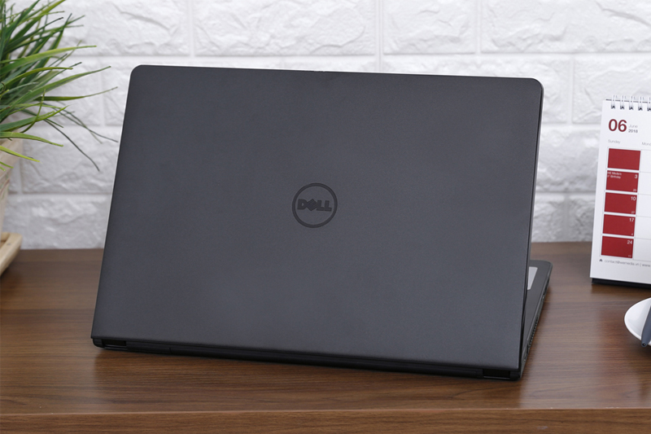

Thiết kế của máy vẫn mang dáng dấp quen thuộc của dòng máy Inspiron với vỏ nhựa cứng cáp, thiết kế khá góc cạnh tăng thêm phần mạnh mẽ cho vẻ bề ngoài của máy. Tuy vậy, máy khá nhẹ so với dòng máy 15.6 inch, dễ dàng mang theo làm việc.
Cấu hình của chiếc laptop Inspiron khá phổ thông với vi xử lý i3 thế hệ thứ 8 tiết kiệm điện và hiệu năng cao, cùng với 4 GB RAM giúp máy chạy tốt các ứng dụng cơ bản cho công việc văn phòng như Office, các phần mềm kế toán,... Các tác vụ học tập trên máy cũng được xử lý một cách trơn tru, ổ cứng 1 TB khá dư dả để chứa tài liệu, hình ảnh hay video giải trí.
Sử dụng màn hình 15.6 inch độ phân giải HD cho hình ảnh hiển thị khá rõ nét, màu sắc chính xác. Khả năng hiển thị cùng màu sắc hài hoà giúp bạn làm việc, học tập hay xem phim lâu trên màn hình mà ít bị mỏi mắt.
Bàn phím được tích hợp dãy phím số bên phải tiện lợi cho các công việc liên quan đến tính toán như kế toán, giáo viên cần làm việc nhiều với số liệu. Ngoài ra các phím được bố trí khá hợp lý cũng giúp người dùng hạn chế tình trạng mỏi tay khi làm việc lâu.